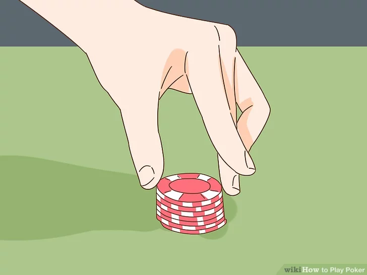
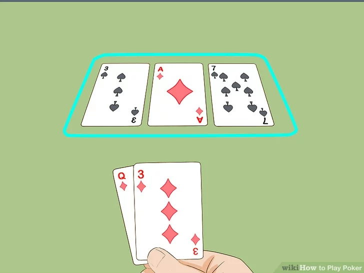

1. The Setup

- Dealer Button: A disc that moves clockwise after every hand to determine who “deals” (and who bets last).
- Blinds: Before any cards are dealt, the two players to the left of the dealer must put in forced bets called the Small Blind and Big Blind to create a “pot” to play for.
2. The Four Betting Rounds

- Pre-Flop: Every player is dealt two private cards face down(Hole Cards). The first round of betting happens now.
- Flop: The dealer places three community cards face up in the middle. These belong to everyone. Another round of betting follows.
- Turn: A fourth community card is dealt face up. A third round of betting occurs.
- River: The fifth and final community card is dealt face up. This is the final round of betting
3. The Showdown
If more than one player remains after the final bet, they reveal their cards. The player with the highest-ranking five-card hand wins the entire pot. If everyone else folds, the last remaining player wins without to show their cards.